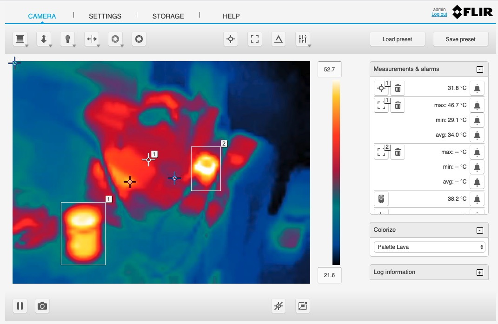

Flir AX8 Thermal Imaging Camera¶
The foglamp-south-FlirAX8 plugin is a south plugin that enables temperature data to be collected from Flir Thermal Imaging Devices, in particular the AX8 and other A Series cameras. The camera provides a number of temperatures for both spots and boxes defined within the field of view of the camera. In addition it can also provide deltas between two temperature readings.
The bounding boxes and spots to read are configured by connecting to the web interface of the camera and dropping the spots on a thermal imaging or pulling out rectangles for the bounding boxes. The camera will return a minimum, maximum and average temperature within each bounding box.
|  |
In order to configure a south service to obtain temperature data from a Flir camera select the South option from the left-hand menu bar and click on the Add icon in the top right corner of the South page that appears. Select the FlirAX8 plugin from the list of south plugins, name your service and click on Next.
The screen that appears is the configuration screen for the FlirAX8 plugin.
 |
There are four configuration parameters that can be set, usually it is only necessary to change the first two however;
- Asset Name: This is the asset name that the temperature data will be written to FogLAMP using. A single asset is used that will contain all of the values read from the camera.
- Server Address: This is the address of the Modbus server within the camera. This is the same IP address that is used to connect to the user interface of the camera.
- Port: The TCP port on which the cameras listens for Modbus requests. Unless changed in the camera the default port of 502 should be used.
- Slave ID: The Modbus Slave ID of the camera. By default the cameras are supplied with this set to 1, if changed within your camera setup you must also change the value here to match.
Once entered click on Next, enable the service on the next page and click on Done.
This will create a single asset that contains values for all boxes and spots that may be define. A filter foglamp-filter-FlirValidity can be added to the south service to remove data for boxes and spots not switched on in the camera user interface. See Flir Validity. This filter also allows you to name the boxes and hence have more meaningful names in the data points within the asset.